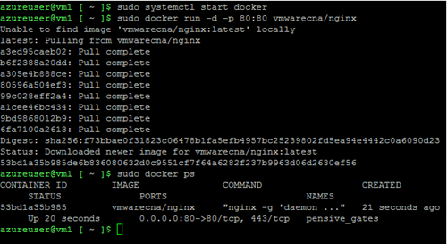

Running Photon OS on Microsoft Azure
Photon OS can serve as a run-time environment for Linux containers on Microsoft Azure. This topic describes how to set up and run the cloud-ready version of Photon OS as an instance of a virtual machine in the Azure cloud. Once running, Docker can run a containerized application in the Photon OS instance.
Note: These instructions apply to Photon OS 2.0. There is no Photon OS 1.0 distribution image for Microsoft Azure.
- About Photon OS
- Prerequisites
- Downloading and Extracting the Photon OS VHD File
- Setting Up Azure Storage and Uploading the VHD
- Deploying a Containerized Application in Photon OS
About Photon OS
Photon OS™ is an open source Linux container host optimized for cloud-native applications, cloud platforms, and VMware infrastructure. Photon OS provides a secure run-time environment for efficiently running containers. For an overview, see https://vmware.github.io/photon/.
Prerequisites
- Microsoft Azure account (sign up if you don't already have one)
- Azure CLI 2.0 (install the latest version) - see Install Azure CLI 2.0 and Get started with Azure CLI 2.0.
- Pair of SSH public / private keys
Downloading and Extracting the Photon OS VHD File
VMware packages Photon OS as a cloud-ready virtual hard disk (VHD file) that you can download for free from Bintray. This VHD file is a virtual appliance with the information and packages that Azure needs to launch an instance of Photon in the cloud. After you have downloaded the distribution archive, extract the VHD file from it. You will later need to upload this VHD file to Azure, where it will be stored in an Azure storage account. For download instructions, see Downloading Photon OS.
Setting Up Azure Storage and Uploading the VHD
You can use either the Azure Portal or the Azure CLI to set up your Azure storage space, upload the Photon OS VHD file, and create the Photon OS VM.
Setting Up Using the Azure Portal
You can use the Azure portal to set up Photon OS 2.0 in the Azure cloud. The following instructions are brief. Refer to the Azure documentation for details.
- Log in to the Azure portal at http://portal.azure.com.
- Create a resource group. In the toolbar, choose Resource Groups, click +Add , fill in the resource group fields, and choose Create.
- Create a storage account. In the toolbar, choose Storage Accounts, click +Add , fill in the storage account fields (and the resource group you just created), and choose Create.
- Select the storage account.
- Scroll down the storage account control bar, click Containers (below BLOB SERVICE), click +Container , fill in the container fields, and choose Create.
- Select the container you just created.
- Click Upload and upload the Photon OS VHD image file to this container.
- Once the VHD file is uploaded, refer to the Azure documentation for instructions on how to create and manage your Photon OS VM.
Setting Up Using the Azure CLI
You can use the Azure CLI 2.0 to set up Photon OS. You must first Install Azure CLI 2.0.
Note: Except where overridden with parameter values, these commands create objects with default settings.
Step 1: Create a Resource Group
From the Azure CLI, create a resource group.
az group create \
--name <your_resource_group> \
--location westus
Step 2: Create a Storage Account
Create a storage account associated with this resource group.
az storage account create \
--resource-group <your_resource_group> \
--location westus \
--name <your_account_name> \
--kind Storage \
--sku Standard_LRS
Step 3: List the Keys for the Storage Account
Retrieve the keys associated with your newly created storage account.
az storage account keys list \
--resource-group <your_resource_group> \
--account-name <your_account_name>
Step 4: Create the Storage Container
Create a storage container associated with your newly created storage account.
Note: The sample create.sh script, described below, does this for you programmatically.
az storage container create \
--account-name <your_account_name> \
--name <your_container_name>
Step 5: Verify Your Setup in the Azure Portal
- Log into the Azure portal using your account credentials.
- From the left toolbar, click Storage Accounts. You should see your storage accounts.
- Select the storage account.
- Scroll down the storage account control bar and click Containers (below BLOB SERVICE). You should see the container you created.
Step 6: Upload the Photon OS Distribution to Your Storage Container
The Photon OS distribution for Azure is 16GB. You can download it locally or to a mounted, shared location.
az storage blob upload \
--account-name <your_account_name> \
--account-key <your_account_key> \
--container-name <your_container_name> \
--type page \
--file <vhd_path> \
--name <vm_name>.vhd
Example Setup Script
You can use the following script (create.sh) to upload your VHD file programmatically and create the VM. Before you run it, specify the following settings:
- resource_group name
- account_name
- account_key (public or private)
- container_name
- public_key_file
- vhd_path and and vm_name of the Photon OS VHD distribution file
This script returns the complete IP address of the newly created VM.
#!/bin/bash
vhd_path=$1
vm_name=$2
export PATH=$PATH:/root/azure_new/bin/az
echo PATH=$PATH
resource_group=""
account_name=""
account_key=""
container_name="mydisks"
url="https://${account_name}.blob.core.windows.net/${container_name}/${vm_name}.vhd"
public_key_file="/root/azure_new/jenkins.pub"
echo "########################"
echo "# Create container #"
echo "########################"
/root/azure_new/bin/az storage container create --account-name ${account_name} --name ${container_name}
echo "##################"
echo "# Upload vhd #"
echo "##################"
/root/azure_new/bin/az storage blob upload --account-name ${account_name} \
--account-key ${account_key} \
--container-name ${container_name} \
--type page \
--file ${vhd_path} \
--name ${vm_name}.vhd
echo "##################"
echo "# Create vm #"
echo "##################"
echo "az vm create --resource-group ${resource_group} --location westus --name ${vm_name} --storage-account ${account_name} --os-type linux --admin-username michellew --ssh-key-value ${public_key_file} --image ${url} --use-unmanaged-disk ... ..."
/root/azure_new/bin/az vm create --resource-group ${resource_group} --location westus --name ${vm_name} --storage-account ${account_name} --os-type linux --admin-username michellew --ssh-key-value ${public_key_file} --image ${url} --use-unmanaged-disk
Removing Photon OS from Azure
You can use the following delete.sh script to programmatically (and silently) remove the VM instance, VHD file, and container.
Note: Consider deleting idle VMs so that you are not charged when not in use.
Before you run it, specify the following settings:
- resource_group name (from step 1, above)
- account_name (from step 2, above)
- account_key (public or private) (from step 3, above)
- container_name (from step 4, above)
- public_key_file
- vm_name of the Photon OS VHD distribution file
delete.sh
#!/bin/bash
vm_name=$1
resource_group=""
account_name=""
account_key=""
container_name="mydisks"
url="https://${account_name}.blob.core.windows.net/${container_name}/${vm_name}.vhd"
public_key_file="/root/azure_new/jenkins.pub"
exit_code=0
echo "##################"
echo "# Delete vm #"
echo "##################"
echo "az vm list --resource-group ${resource_group} ... ..."
/root/azure_new/bin/az vm list --resource-group ${resource_group}
echo "az vm delete --resource-group ${resource_group} --name ${vm_name} --yes ... ..."
/root/azure_new/bin/az vm delete --resource-group ${resource_group} --name ${vm_name} --yes
if [$? -ne 0];then
exit_code=1
fi
echo "az vm list --resource-group ${resource_group} ... ..."
/root/azure_new/bin/az vm list --resource-group ${resource_group}
echo "##############$####"
echo "# Delete vhd #"
echo "###############$###"
echo "az storage blob list --account-name ${account_name} --container-name ${container_name} ... ..."
/root/azure_new/bin/az storage blob list --account-name ${account_name} --container-name ${container_name}
echo "az storage blob delete --account-name ${account_name} --container-name ${container_name} --name ${vm_name}.vhd ... ..."
/root/azure_new/bin/az storage blob delete --account-name ${account_name} --container-name ${container_name} --name ${vm_name}.vhd
if [$? -ne 0];then
exit_code=1
fi
echo "az storage blob list --account-name ${account_name} --container-name ${container_name} ... ..."
/root/azure_new/bin/az storage blob list --account-name ${account_name} --container-name ${container_name}
echo "########################"
echo "# Delete container #"
echo "########################"
/root/azure_new/bin/az storage container delete --account-name ${account_name} --name ${container_name}
/root/azure_new/bin/az storage container delete --account-name ${account_name} --name vhds
exit ${exit_code}
Deploying a Containerized Application in Photon OS
Now that you have your container runtime environment up and running, you can easily deploy a containerized application. For this example, you will deploy the popular open source Web Server Nginx. The Nginx application has a customized VMware package that is published as a dockerfile and can be downloaded, directly, through the Docker module from the Docker Hub.
Step 1: Run Docker
To run Docker from the command prompt, enter the following command, which initializes the docker engine:
systemctl start docker
To ensure Docker daemon service runs on every subsequent VM reboot, enter the following command:
systemctl enable docker
Step 2: Run the Nginx Web Server
Now the Docker daemon service is running, it is a simple task to "pull" and start the Nginx Web Server container from Docker Hub. To do this, type the following command:
docker run -d -p 80:80 vmwarecna/nginx
This pulls the Nginx Web Server files and appropriate dependent container filesystem layers required for this containerized application to run.

After the "docker run" process completes, you return to the command prompt. You now have a fully active website up and running in a container.
Step 3: Test the Web Server
Note : Please make sure that the proper security policies have been enabled on the Microsoft Azure side to enable traffic to port 80 on the VM.
To test that your Web Server is active:
- Run the ifconfig command to get the IP address of the Photon OS Virtual Machine. The output displays a list of adapters that are connected to the virtual machine. Typically, the web server daemon will be bound on "eth0."
- Start a browser on your host machine and enter the IP address of your Photon OS Virtual Machine.
- You should see a screen confirming that the nginx web server is successfully installed and working.
You can now run any other containerized application from Docker Hub or your own containerized application within Photon OS.